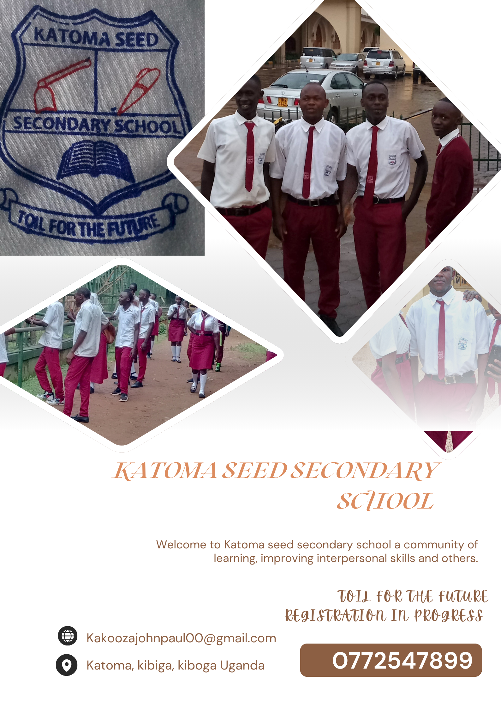

KATOMA SEED SECONDARY SCHOOL
Welcome to Katoma Seed Secondary school, a prestigious school renowned for its academic excellence, innovative spirit and commitment to fostering a community of selective intelligent individuals. As you navigate our website, we invite you to discover extremely great opportunities that our school offers, from rigorous academic programs and cutting edge research initiatives to diverse extracurricular activities and community services. At our school, we pride ourselves on providing a transformative educational experience that cultivates intellectual strong desires to know, creativity and critical thinking.
Katoma seed secondary school is a school in Kibiga Kiboga central Uganda. It is situated nearby the Kindergarten His Grace Nursery school. View we are located in a conducive environment that is calm, free from noise to facilitate your child’s learning

Our school has ultramodern
facilities that facilitates a holistic learning for our students and accessible
for all students.
“Readers of today will be leaders of tomorrow” against such a strong belief,
Katoma seed secondary school has fully stocked
Library, computer
laboratory and science
laboratory that students can access to
research what they learn in class.
LIBRARY COMPUTER LAB SCIENCE LAB
People also ask
.jpg)
Why to choose
Katoma Seed as the best school in kiboga Uganda?
We set high expectation to insipe our students to strive (TOIL FOR THE FUTURE) for excellence in all they do. Click more...
Our mission is to empower
students to reach their full potential in a supportive and engaging environment.
We strive to foster a love of learning that goes beyond the class room,
responsible citizens I the global society. We envision a community where every
student feels valued, included, engaged and encouraged to achieve excellence.
Katoma seed serves as a vibrant
community of families and students. Our dedicated team of educators, staff and
volunteers work collaboratively with parents and community members to ensure
each child receives the support and encouragement they need to thrive. The
school has student support services which include
counseling
and guidance
health services to ensure our students
stay safe and health
Our aim based New curriculum is to develop lifelong learners who are prepared to embrace the challenges of the future equipped with both knowledge and characters. We encourage our students to do project work under different themes set aside by UNEB. These projects are to improve our learner’s skills; innovation and creativity hence reducing unemployment in Uganda.
.jpg)
Students life at the school is a
balance one infusing academics with extracurricular activities making holistic
students. We offer competitive and non competitive individuals by house sporting
activities.

Most of the popular sports are also played at our school including football, netball and athletics.
don't miss out on the opportunity to explore your interests, develop new skills and make lifelong
join our school today and become an integral part of our vibrant school community and world wide.
"toil for the future"